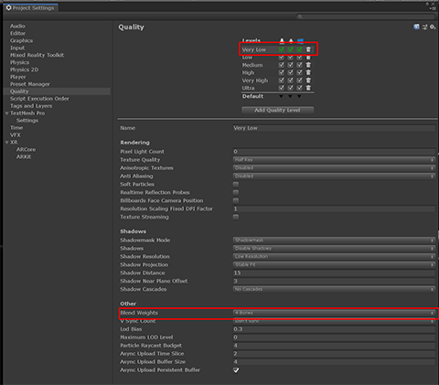

手势教学 Hand coach

手势教学是三维模型的手，当系统没有检测到用户的手时触发。这是作为一个“教学”组件来实现的，在没有教手势时帮助指导用户。如果用户在一段时间内没有做指定的手势，手就会在一段时间内循环。手势教学可以用来代表按下一个按钮或拿起一个全息图。
当前的交互模型代表了各种各样的手势控制，比如滚动、远处选择和近处点击。下面是现有的手势教学的完整列表:
- Near tap – 用于按钮或关闭可交互的对象
- Far select – 用于远处的对象
- Move – 用于移动空间中的全息图
- Rotate – 用于显示如何旋转全息图或对象
- Scale – 用来显示如何操纵全息图变大或变小
- Hand flip – 用于弹出UI启动面板或手动菜单
- Palm up – 用于自带的蜂鸟时刻的体验。另一个建议是打开UI启动面板
- Scroll – 用于滚动列表或长文档
示例场景
你可以在以下的HandCoachExample场景中找到例子: MixedRealityToolkit.Examples/Experimental/HandCoach/Scenes
3D手部资源
你可以在下面找到资源: MixedRealityToolkit.SDK/Experimental/HandCoach
质量
如果你注意到蒙皮网格的扭曲，你需要确保你的项目使用了适当数量的关节。 进入Unity的 Edit > Project Settings > Quality > Other > Blend Weights。确保"4 bones"被选中以看到光滑的关节。

脚本
交互提示 Interaction hint
InteractionHint.cs 脚本为hand rig提供了触发动画和淡入淡出的包装器功能。
如何设置交互提示
要设置交互提示，建议使用提供的预置体“StaticHandCoachRoot_L.prefab”和“StaticHandCoachRoot_R.prefab”。这个预制体组件包含了InteractionHint脚本和hand rig以及适当的层次结构，以确保所提供的提示动画按预期工作。
否则，你需要把脚本放在gameObject的一个父级别上，从你的具有animator的hand rig上。
Inspector 属性
HideIfHandTracked 这个布尔值指定当用户的手被跟踪时，是否应该使用手跟踪状态来隐藏视觉效果。如果设置为false，只有脚本属性“customShouldHideVisuals” 将被用来确定是否隐藏提示。
MinDelay这个属性指定了显示视觉效果的最小延迟。默认情况下，如果用户的手没有被跟踪，那么手的视觉效果将在这段时间后出现。
MaxDelay这个属性指定了显示视觉效果的最大延迟。默认情况下，即使用户的手正在被跟踪，手部的视觉效果也会在这段时间后出现。
UseMaxTimer如果这个布尔值设置为false，它将禁用最大计时器，并且只允许在用户的手不在视图中时显示手动提示，或者自定义的条件返回false时。
Repeats 这个属性控制当最小或最大计时器触发时，提示动画播放多少次。然后，提示隐藏起来，再次等待延迟。
AutoActivate 当这个布尔值设置为true时，提示将自动通过计时器逻辑运行，当游戏对象的脚本在hierarchy中是活跃的，脚本是启用的。只有当您打算通过代码手动控制提示的出现和消失时，才应该将其设置为false。
AnimationState 提示激活时应该播放的动画状态的名称。这必须在调用StartHintLoop()函数之前设置(在OnEnable期间，如果AutoActivate被选中)。
通过脚本控制交互提示
StartHintLoop这个函数将启动show/hide循环，如果AutoActivate标志设置为true，则启动OnEnable。
StopHintLoop 这个函数调用淡入淡出动画状态，如果它目前没有播放，然后将禁用显示/隐藏循环，并在层次结构中设置hand rig 不活动。
AnimationState 这个字符串决定在循环中播放哪个动画状态。您可以更改这个字符串来更改播放的状态，但是必须在调用StopHintLoop之后这样做，并且在更改状态之后必须再次调用StartHintLoop。
CustomShouldHideVisuals 你可以用你自己的函数来设置这个，它应该在当您想隐藏手形图像时(要多注意MinMaxTimer，特别是max参数)
自定义动画注意事项
淡入默认为0.5秒，所以任何为rig使用而创建的自定义动画至少需要1.5秒来传递有意义的信息
提供的默认淡入和淡出状态，Fade_In和Fade_Out可以通过改变第二个关键帧的时间戳来调整淡入淡出长度。
动画师和脚本的设置应该使设置尽可能简单。要添加新的动画状态，只需导入fbx，确保动画名称设置为不同的名称，然后将该动画拖放到animator中。
移动到目标 MoveToTarget
MoveToTarget.cs脚本提供了一种功能，可以随着时间的推移将手部提示从跟踪位置移动到目标位置。
如何设置MoveToTarget
提供的预制体“MovingHandCoachRoot_L.prefab”和“MovingHandCoachRoot_R.prefab”在其层次结构中包含一个MoveToTarget。如果你想在你自己的设置中使用这个脚本，你需要把它放在包含你的rig的动画器的根gameobject上。
Inspector 属性
- TrackingObject 在rig开始运动之前用你想要跟随的对象设置这个。建议创建一个空的游戏对象，并将其移动到一个特定的位置，以帮助您精确跟踪。
- TargetObject 用你想要rig在运动期间移动到的对象来设置这个。建议创建一个空的游戏对象，并将其移动到一个特定的位置，以帮助您精确跟踪。
- RootObject 设置此为跟踪对象和目标对象之间的共享父对象，这样可以正确计算相对位置。包含的预置在它的层次结构中有跟踪和目标对象，但是你可以在预置之外设置目标对象作为游戏对象，并将根对象更改为共享的父对象。
- Duration 从TrackingObject移动到TargetObject需要的时间(以秒为单位)。
- TargetOffset 一个可调的偏移量，使GameObject到达正确的目标位置。如果你的动画包含了在动画期间的位置偏移，这是有用的。
- AnimationCurve 这是一个默认的线性曲线，但你可以改变曲线来提供缓进/缓出当开始和停止运动路径。
通过脚本控制MoveToTarget
在您的自定义脚本中，当您希望hand rig跟随TrackingObject时调用Follow()，然后在希望hand rig开始向TargetObject移动时调用MoveToTargetPosition()。
通过动画控制 MoveToTarget
在需要移动的动画中，设置两个事件:一个调用Follow()，另一个调用MoveToTargetPosition()。Follow应该在第一个关键帧上设置，因为它会导致hand rig跟随你的TrackingObject。MoveToTargetPosition应该设置在关键帧，你想要rig开始移动到目标。这就是脚本功能在所提供的预制体中的使用方式。
绕点旋转 RotateAroundPoint
RotateAroundPoint.cs 脚本提供了随着时间围绕枢轴点旋转手部指示的功能。
如何设置 RotateAroundPoint
提供的预制体“RotatingHandCoachRoot_L.prefab” 和“RotatingHandCoachRoot_R.prefab”，在它们的层次结构中包含一个RotateAroundPoint。如果你想在你自己的设置中使用这个脚本，你需要把它放在包含你的rig的动画器的根gameobject上。
Inspector 属性
- CenteredParent 用你想要rig旋转的父对象设置这个。
- InverseParent 在父节点上设置这个反向旋转到centeredParent，以保持手的方向相同。通常，这将是带有InteractionHint脚本的父对象。
- PivotPosition 设置这个点为你想要提示开始运动的地方。
- Duration 围绕CenteredParent旋转所需的时间(以秒为单位)。
- AnimationCurve 这是一个默认的线性曲线，但你可以改变曲线来提供缓进/缓出当开始和停止运动路径。
- RotationVector 沿每个轴旋转多少度。
通过脚本控制 RotateAroundPoint
在您的自定义脚本中，当您希望hand rig开始围绕CenteredParent旋转时，调用RotateToTarget()。当您希望位置重置为原始的PivotPosition时，调用ResetAndDeterminePivot()。
通过动画控制 RotateAroundPoint
在需要移动的动画中，设置两个事件:一个调用ResetAndDeterminePivot()，另一个调用RotateToTarget()。ResetAndDeterminePivot应该在第一个关键帧上设置，因为它会导致手动装置重置到枢轴位置。RotateToTarget应该设置在关键帧上，你想要rig开始旋转围绕CenteredParent。这就是脚本功能在所提供的预制体中的使用方式。